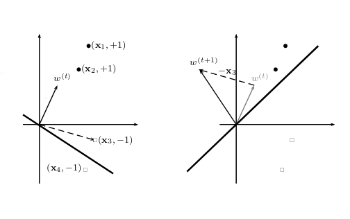

Class Notes: Fundamental Machine Learning 2
ERM principle
- Given a training set and a class of function
-
Emperical Risk Minimization principle:
Find by minimizing the unbiased estimator of its generalization error on a given training set:
- Problem: for a finite set S, come to 0; however, for infinite set, error always equal 1.
Quantitative Learning Model
- learning model: biological neuron ( century).
- MuCilloch & Pitts formal neuron (1943)
- Linear prediction function.
-
Rosenblatt's Perceptron
- The equation
represent an hyperplane in the vector space of dimension - Aim of learning when we are doing classification is to find weight in order to have a positive response for examples of class +1 and negative response for examples of class -1.
- Any vector x in the vectoral space has a unique decomposition
-
The idea of Rosenblatt:
There are 2 types of signals that are drawn on the perceptron board. Signals correspoding to the form of interest, to which are associated the out put +1, and the other signal assoc. the output -1.
Find the weights of the hyperplane by minimizing the distance between the classified signals on the hyperplanes.
-
Learning perceptronparameters
- Objective function:
- Update rule: gradient descent
- Derivatives with respect to the parameters
- Stochastic gradient descent
-
Graphical depiction of online update rule 
- The equation